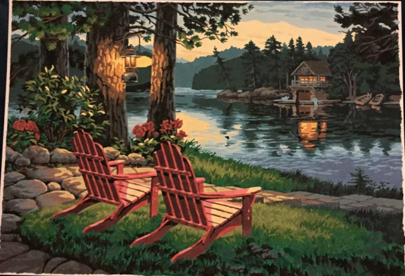

Paint by Numbers
Crochet
Woodburning
Cross Stitch
Legos
About Me
I am unsure of where I found my love for arts and crafts because when I was younger I couldn't even color in the lines. Crafts ended up being a hobby of mine about five years ago when my husbands' grandma had a paint by number that she wanted me to complete. After that was finished, she started teaching me how to crochet and I took it a step farther and started making three-dimensional creatures. My new found hobby had flourished from there into some neat projects that I will show you.
Paint by Numbers
I have always enjoyed painting but have never been creative to paint from scratch. These paint by numbers have given me the opportunity to paint with directions already on the canvas. Paint by numbers usually take a few days for me to finally finish because I tend to start painting the easy "bigger" areas and by the time I get to the tiny spots I am tired of working on it.
Crochet
My husbands grandma taught me how to crocheting and I found it very boring but I was good at it. I turned the basics that she showed me and found a challenging hobby called amigarumi. Amigarumi is crocheting but with a three-dimensional twist. I taught myself this by watching youtube videos and finding patterns online. My favorite was this owl I made a few years ago. This owl took me about six to eight hours to complete. I have done projects that are much smaller and can be completed within two to four hours.
Woodburning
I took up woodburning out of the blue one winter. I was wanting to start a new challenge and this was the first piece I ever completed. I normally find templates online and make them that way. The pieces I usually create take about four to eight hours to complete.

Cross Stitching
Legos
Legos have been one of my most recent hobbies/crafts within the past year. I bought my first few Modular Lego sets on Thanksgiving of 2016 and that started my collection and obsession with Legos. My husband found a lady in the town next to us selling six Modular Lego sets and we went and bought three of them. Within the next few days I realized this was something I loved and we called the lady back and went to buy the last three that she had. Needless to say, this started a very expensive hobby. As of right now, I have all the Modular Lego sets available besides the first two. These run at $1,000 and above and that is the reason behind them being missing from my collection. Someday they will be mine! In the picture there are about nine modular building sets. These take an average of 16 - 24 hours to complete.